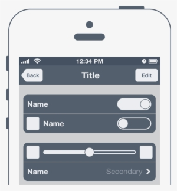

Primary Color
Hex: #1E88E5
Usage: Main headings, important buttons, and key links.
Site Plan – Developer Portfolio
This name combines the words "Dev" (developer) and "Path" (journey), representing my personal journey in software development, web technologies, and related projects. It communicates growth, learning, and a clear direction in my tech career.
Optional domain (not required for this class): devpathbyjosue.com (or devpath-jq.dev)
The primary purpose of this website is to serve as my professional developer portfolio. It will:
These are example questions that my target audience (recruiters, hiring managers, or collaborators) might have:
The color scheme is designed to feel modern, clean, and professional, with a focus on readability and subtle accents.
Hex: #1E88E5
Usage: Main headings, important buttons, and key links.
Hex: #FFB300
Usage: Accent elements, highlights, badges, and hover states.
Hex: #F5F5F5
Usage: Page background to provide a soft, neutral base.
Hex: #212121
Usage: Main body text for good contrast and legibility.
The site will use two primary font families from Google Fonts to keep the design simple and consistent:
Building a clear and modern developer portfolio.
This website will present my projects, skills, and contact information in a simple, responsive layout that works well on both mobile and desktop devices.
The following wireframes represent the basic layout of the home page for both mobile and larger desktop views. These sketches focus on structure and content placement rather than final colors or images.


Note: The actual implementation in the final project may adjust these sections slightly as the design is refined.
The website will contain at least three main pages that share a common navigation, theme, and overall layout. The current plan is:
JavaScript will be used to create dynamic, interactive behavior across the site. Planned features include:
filter, map, and
forEach,
output via template literals.
localStorage and applied on page load.
The contact form will follow HTML and accessibility standards presented in the course.
loading="lazy".